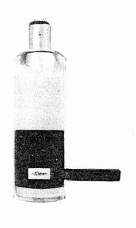
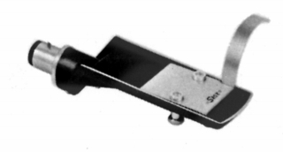
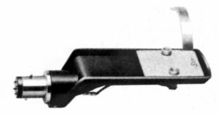
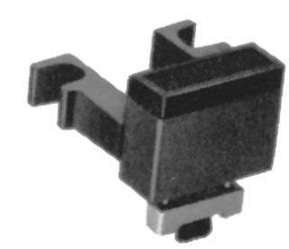
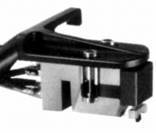
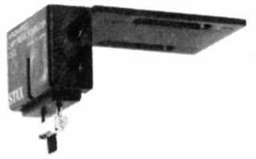

その他の製品
�@ヘッドシェル
UA-3シェル

■価格 900円
■備考 1966年頃の広告によれば単独販売していたようだ。
ただしアームの改良(UA-3→UA-3N）の際にヘッドシェルも改良の
対象となっていた。カバーのプラスチック部分が脆弱だったらしい。
HS-7

■価格 1,600円
■重量 10g
■備考 アルミダイキャスト製。
価格は1972年頃のもの。
1975年頃は2,300円。
HS-7/Type2

■価格 2,500円
■重量 10g
■備考 アルミダイキャスト製。（含銅アルミ合金）
2ピンロック式。
価格は1977年頃のもの。
1985年頃は3,000円。(LC-OFCリード付き）
1987年頃には5,000円(PC-OCCリード付き）
�Aカートリッジスタビライザー
CS-1


■価格 3,000円
■備考 共振低減用のエアダンプ式スタビライザー。
カーボンブラシによる除電効果あり。
CP-Y用。CP-Y/Type2では標準装備済み。
CS-2

■価格 3,500円
■備考 共振低減用のエアダンプ式スタビライザー。
カーボンブラシによる除電効果あり。
一般のカートリッジ用。
価格は1979年頃のもの
1987年頃には5,500円
スタックスのインデックスへ